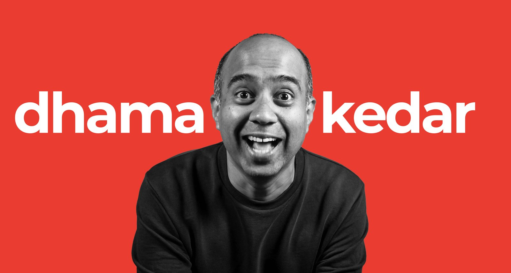

I am Kedar in dhamakedar
Index of /kedar
Kedar
The Gyaan Project
- Podcast website↗
- YouTube↗
- Spotify↗
- Apple Podcasts↗
- Amazon Music↗
- Newsletter↗
- WhatsApp channel↗
- Instagram↗
- X↗
- LinkedIn↗
- Ask The Gyaan ProjectDown
Personal projects
- Podcast OS↗
- Legends of India↗
- A book I designed, by John Pathrose↗
- Tiny CVWIP
- SignagesWIP